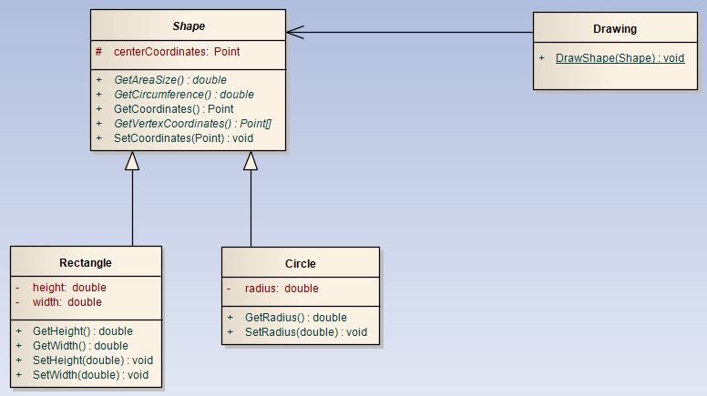
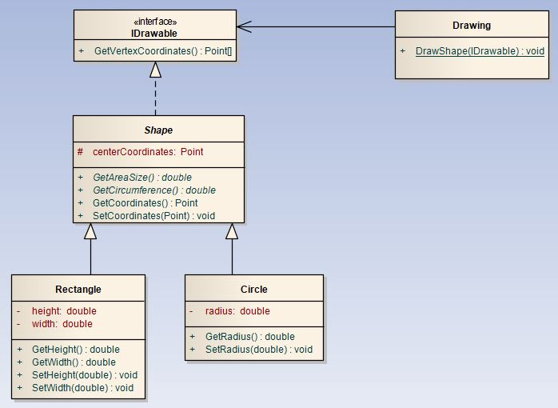

Kuriant didesnės apimties projektus pastebima, kad klasės tarpusavyje yra susietos - bendrauja tarpusavyje per viena kitos operacijas, kurių metu perduodami tam tikri objektai, saugantys apsikeitimui aktualią informaciją. Kai perduodamas visas objektas, kyla pavojus perduoti daugiau nei reikia ir, tokiu būdu, suteikiama galymybė pažeisti duomenų integralumą, paliekamos galimybės duomenų nutekinimui ir pan. Delegavimas leidžia tokią problemą išspręsti labai paprastu būdu - kitai klasei perduoti tik tai kas būtina. Delegavimas, tai savybė leidžianti metodą naudoti kaip objektą. Panagrinėkime atvejį (1 pav.).
 1 pav. Ryšys tarp Shape, Drawing, Rectangle ir Circle klasių.
Pirmojo pavyzdžio schemoje matome gana tvarkingą klasių tarpusavio ryšį: klasė Drawing asociaciniu ryšiu susieta su abstrakčia klase Shape, klasės Rectangle ir Circle paveldėjimo ryšiu su Shape klase. Drawing klasė atsakinga už geometrinių objektų atvaizdavimą. Nuoroda į atvaizduojamą objektą perduodama per bazinę klasę Shape, kurioje yra nuoroda į metodą GetVertexCoordinates(), kuris grąžina viršūnių tarp kurių brėžiama linija koordinates. Tačiau perduodami objektą, perduodame ir kitus viešuosius klasės narius, o tai atveria spragas duomenų saugume.
Panagrinėkime antrąjį atvejį (2 pav.).
 2 pav. Patobulintas ryšys tarp Shape, Drawing, Rectangle ir Circle klasių.
Antrojo pavyzdžio schemoje matome patobulintą tarpusavio ryšį: klasė Drawing tiesiogiai, asociaciniu ryšiu, susieta ne su abstrakčia klase Shape, o su interfeisu IDrawable. Interfeise yra apibrėžtas tik vienas metodas, tad tokiu atveju klasė Drawing prieis tik prie tų duomenų, kurie tai klasei ir skirti (pavyzdžio atveju, nuoroda tik į metodą GetVertexCoordinates()).
1. classDrawing: 2. @staticmethod 3. def draw_shape(drawable_object): 3. for point in drawable_object.get_vertex_coordinates()): 4. .........................
Antro pavyzdžio schema ir kodas yra būdas realizuoti komunikaciją tarp skirtingų klasių objektų tinkamas bet kuriai programavimo kalbai. Tačiau C# kalboje yra galimybė deleguoti patį metodą, nenaudojant interfeisų. Tam naudojamas specialus tipas - delegatas, tai toks duomenų tipas išreiškiantis nuorodas į tam tikros formos metodus. Metodo forma apibrėžiama grąžinamo rezultato tipu ir parametrų sąrašu. Jei apibrėžiame delegatą, kurio tipas yra void, o parametrų aibė yra tuščia, reiškia, kad per tokį delegatą galima perduoti bet kurį metodą beparametrį void metodą.
Naudojant delegatus yra tinkama ir pirmojo pavyzdžio schema, atlikus tam tikrus pakeitimus klasėje Drawing metodo. Panagrinėkime pavyzdį.
Klasė Drawing:
1. classDrawing 2. { 3. public delegatePoint[] DelegatedMethod(); 4. 5. public void DrawShape(DelegatedMethod method) 6. { 7. if (method != null) 8. { 9. foreach (Point point in method) 10.{ 11..........................; 12.} 13.} 14.} 15.}
Klasė Main:
1. Rectangle rectangle = newRectangle(...); 2. Circle circle = newCircle(...); 3. Drawing drawing = new Drawing(); 4. 5. drawing.DrawShape(rectangle.GetVertexCoordinates); 5. drawing.DrawShape(circle.GetVertexCoordinates);
Pastarojo pavyzdžio Drawing klasėje apsibrėžėme delegato tipą (3-čia eilutė), kuriuo nurodome kokio tipo metodus galima deleguoti į šią klasę. Main klasėje sukuriame Drawing klasės objektą, į kurį per metodus paduodame atitinkamos formos deleguojamus metodus.